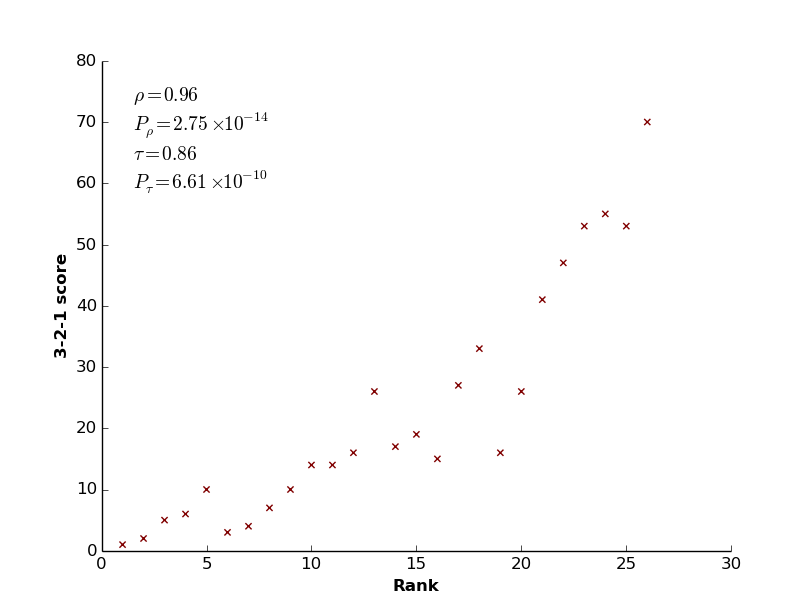

Winter Olympics
Statistical analysis of the geodemographic factors influencing winning at the Winter Olympics.
I'm comparing the historical medals from the Winter Olympics to various geodemographic features of the countries involved.
Skills employed: Statistics (non-parametric correlation coefficients, regression analysis), Python (Numpy, SciPy, Matplotlib, Scrapy), MySQL, database design, Web scraping, Linux
A comparison of gold-based ranking to a medal scoring system. Shows both Spearman's rho (the non-parametric analogue of the Pearson correlation coefficient) and Kendall's tau.
This is mainly for personal interest, to polish my stats abilities and to get some experience of MySQL databases (upskilling!).
I've scraped the medals data, linked it to countries and years. I've got the latitude and longitude data for all the countries, once I've plotted that I'll go through numbers like GDP per person, sports spending, tax revenue and other such numbers to see where the correlations lie (and other relevant statistics).